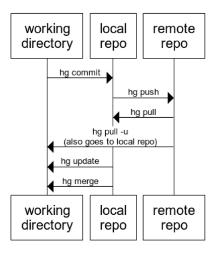
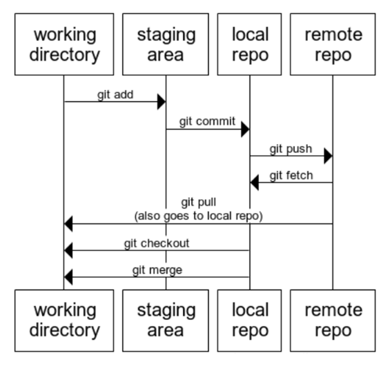

big difference is the "staging area" and fetch/pull.
| mercurial | git | note |
|---|---|---|
| hg init | git init | |
| hg pull | git fetch | bring into local repo but not working folder |
| hg pull --update | git pull | bring into local repo and working folder |
| hg pull --rebase | git pull --rebase | |
| hg status | git status | |
| hg diff | git diff HEAD | shows all changes whether staged or not |
| hg outgoing | git log --branches --not --remotes=origin | (bit of a mouthful, can use an alias) |
See: https://github.com/sympy/sympy/wiki/Git-hg-rosetta-stone#Rosetta_Stone
[http]
proxy = {your proxy if needed}
[https]
proxy = {your proxy if needed}
[user]
name = Leon
email = Leon@example.com
[credential]
helper = manager
[alias]
outgoing = log --branches --not --remotes=origin
out = !git outgoing
incoming = !git fetch ; git log ..origin/master
in = !"git incoming"
st = status
stat = status
paths = remote -v
path = !"git paths"
heads = show-ref
alias = config --get-regexp alias
git config --global user.name "Leon"
git config --global user.email "Leon@example.com"
git config --global http.proxy {your proxy if needed}
git config --global https.proxy {your proxy if needed}